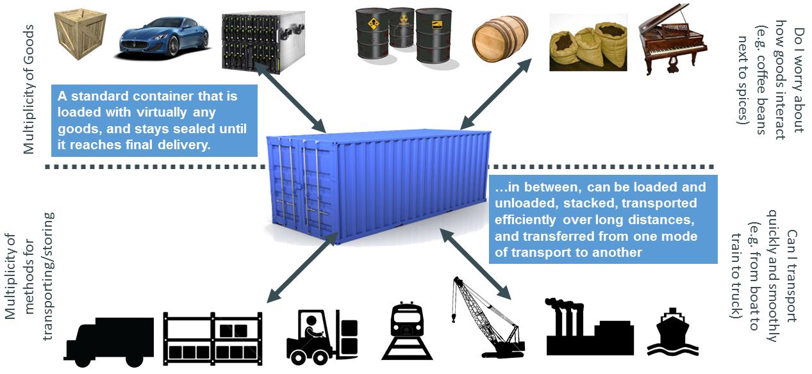
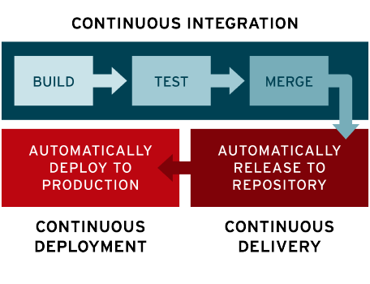

### Typen von Clouds
- Traditional IT
- Public Cloud
- Private Cloud
- Hybrid Cloud
### Traditionelle IT- Alles In-House
- Anforderungen erfassen
- Beschaffung
- Integration in existierende Systeme
- Strom, Netzwerk, Kühlung
### Public Cloud
- betrieben von einem Dienstleister **für die Öffentlichkeit**
- Massengeschäft
- **keine** Anpassungen für einzelne Kunden
### Private Cloud
- betrieben von einem Dienstleister für **einen** Kunden, oder
- vom Kunden selbst für die eigene Organisation
- auf kundeneigener oder Dienstleister-Hardware
### Hybrid Cloud
- Verbindung von public und private Cloud
- Workload kann frei verschoben werden, je nach Anforderung
### Potentiale (1)
- Einsparung von Personalkosten durch Standardisierung und Automatisierung von
- Konfiguration
- Betrieb
- Verwaltung
- Überwachung
### Potentiale (2)
- Verbesserte Kapitalnutzung durch erhöhte Auslastung der Hardware
- Verringerte Lizenzkosten durch gemeinsamen Betrieb
- Beschleunigte Bereitstellung von Resourcen (Minuten statt Tagen)
### Risikofaktoren (1)
- Vendor Lock-in
- Gewährleistung und Haftung
- Cloud-Anbieter haben ggf. Geschäftsbeziehung mit Endanwender (Fernabsatzgesetz, AGB, MWSt.)
- Urheberrecht (an Software und den mit ihr erstellten Werken)
- Datenschutz (“EU-Cloud”)
### Cloud-native
- pets vs. cattle
- 12 factor apps
### pets vs. cattle
- Jemand installiert Standard-Software auf einem Server
- Eine andere Person kopiert selbstentwickelte Software dorthin und startet sie manuell
- Ein Dritter konfiguriert System- und Anwendungssoftware
- Was passiert, wenn der Server kaputt geht?
### pets vs. cattle
- Automatisierung
- Infrastructure as code
- Tools Chef, Ansible ...
### Die 12 Faktoren (1)
- Eine im Versionsmanagementsystem verwaltete Codebase, viele Deployments
- Abhängigkeiten explizit deklarieren und isolieren
- die Konfiguration in Umgebungsvariablen ablegen
### Die 12 Faktoren (2)
- Unterstützende Dienste als angehängte Ressourcen behandeln
- Build- und Run-Phase strikt trennen
- Die App als einen oder mehrere Prozesse ausführen
### Die 12 Faktoren (3)
- Dienste durch das Binden von Ports exportieren
- Nebenläufigkeit wird durch das Skalieren individueller Prozesse ermöglicht
- Schneller Start/Stopp ermöglicht robuste Anwendungen
### Die 12 Faktoren (4)
- Entwicklung, Staging und Produktion so ähnlich wie möglich halten
- Logs als Strom von Ereignissen behandeln
- Admin/Management-Aufgaben als einmalige Vorgänge behandeln
### VM
### ganz kurz
- HW wird in SW abgebildet
- Vollvirtualisierung: ARM auf Amd/Intel (z.B. Qemu, Android-Emulator)
- Paravirtualisierung: Identische Architektur, Beschleunigung durch CPU-Features
- emuliertes Netzwerk, Storage usw.
### Vorteile
- einfach wiederherstellbar (Snapshot)
- kopierbar (Works on my machine ...)
- HW-unabhängig (emulierte HW bleibt gleich)
### Container
#### Was sind Container?
Gütertransport vor ca. 1960
Matrix from Hell
Lösung: Container für alles

Staging vor 2013¹
[1] vor Docker
Auch hier: Matrix from Hell
Container vereinheitlichen die Matrix
Wie?
#### Warum ist das für die Entwicklung interessant?
- Läuft "überall"
- Einheitliche Umgebung in dev, staging & prod
- Alle Abhängigkeiten enthalten
- Apps teilen sich keine Abhängigkeiten
### Warum ist das für die Entwicklung interessant? (2)
- Einheitlicher Lebenszyklus ermögliche Standardisierung von
- Deployment
- Start
- Stop
- Scaling
- Löschen
Keine Kompatibilitätsprobleme mehr (?)
### Warum ist das für **den Betrieb** interessant?
siehe oben plus:
- Kaum teurer als Prozesse (vgl. VM)
- Weit weniger Hardware benötigt
- Einheitlicher Lebenszyklus **aller** Services
- Effizienzgewinn durch Standardisierung
- Continuous Deployment wird stark vereinfacht
- Trennung der Verantwortlichkeiten
Trennung der Verantwortlichkeiten
Idee
### Achtung:
#### Containers == Docker?
Falsch!
### Geschichte
- Linux Kernel: process isolation
- Namespaces (2006)
- cgroups (2007)
- LXC (2008)
- CF Warden (2011)
- Docker (2013)
#### Docker
- dotCloud (..2013)
- Marketing
- Tooling
- Mindshare (!)
### Ab hier
#### Containers =~ Docker
### Docker: Bestandteile
- Image: Vorlage oder Bauplan für Container
- Container: eine Instanz eines Images, die ausgeführt wird
- Registry: verwaltet Images
- Engine: Laufzeit-Plattform
Docker Engine
Architektur
### Hands-on
Container starten
``` shell
docker run -it --rm alpine sh
Unable to find image alpine:latest locally
Pulling from library/alpine
Digest: sha256:f006ecbb824d87947d0b51ab8488634bf69fe4094959d935c0c103f4820a417d
Status: Downloaded newer image for alpine:latest
```
### Was ist passiert?
- Image heruntergeladen
- Container gestarted
- mit interaktivem Terminal
- Shell gestartet
- Shell interaktiv beendet
Containers vs. VMs
VMs
Container
emuliert wird
(physische) Hardware
OS (Kernel)
Resourcen-Zugriff
Hypervisor
Kernel-Features
beschränkt auf
–
Linux, Windows
Overhead
relativ hoch
relativ gering
### Container-Image
- beschrieben durch Dockerfile
- Text-Datei mit Schritten zum Bau des Images
- gebaut mit
``` shell
docker build .
```
### Dockerfile
- FROM: Basis-Image (‘abgeleitet von’ oder ‘basiert auf’)
- RUN: Kommando ausführen und Ergebnis als Layer committen
- ADD: Lokale Dateien und Verzeichnisse hinzufügen
- CMD: Was bei "docker run" passiert
- EXPOSE: Deklaration von Ports (vgl. --publish)
- ENV : Umgebungsvariablen setzen
### Multi-Container Orchestration
Ein Container kommt selten allein:
- Three-tier web app
- Wordpress (PHP-files + MySQL)
### Prinzip
- YAML-Datei beschreibt eine “Komposition” aus mehreren Containern (‘Services’)
- Image (z.B. postgres oder php)
- Volumes
- Abhängigkeiten
- Umgebungsvariablen
- Ports
- etc.
#### Anwendungen in Container "verpacken" - Allgemein
- 1 Container = (im Idealfall) 1 Prozess
- Anwendung als Binary
- Interpreter + Source (PHP, JavaScript, ...)
- JAVA : JVM + JAR
#### Anwendungen in Container "verpacken" - Java
- Basis-Container (z.B. openjdk:latest)
- FAT-JAR erzeugen (IDE, besser per Build-Tool maven, gradle...)
- alternativ: Classpath mit java cp-Parameter manuell setzen
#### Anwendungen in Container "verpacken" - Java
``` shell
FROM openjdk:11
ADD target/docker-test-0.0.1-SNAPSHOT.jar /
RUN cd /
EXPOSE 8080
CMD java -jar docker-test-0.0.1-SNAPSHOT.jar
```
#### Anwendungen in Container "verpacken" - JavaScript/TypeScript
- Abhängigkeiten installieren (npm install)
- TypeScript build (z.B. npm run build)
- Basis-Container (z.B. node:15.5.1-alpine3.10)
- JavaScript src-Order hinzufügen
- node_modules hinzufügen
#### Anwendungen in Container "verpacken" - JavaScript/TypeScript
``` shell
FROM node:15.5.1-alpine3.10
RUN mkdir /app
ADD dist /app/dist
ADD node_modules /app/node_modules
EXPOSE 3000
ENTRYPOINT ["node", "/app/dist/main.js"]
```
#### Anwendungen in Container "verpacken" - PHP
- Basis-Container (z.B. php:apache)
- src-Order hinzufügen
#### ENTRYPOINT vs. CMD
- Entrypoint ist statisch, kann nicht überschrieben werden
- CMD kann vom Aufrufer gesetzt / überschrieben werden
### DB starten mit Port-Freigabe
``` shell
docker run --name some-postgres --rm -e POSTGRES_PASSWORD=test -p 5432:5432 -d postgres
```
### Referenz
https://docs.docker.com/compose/compose-file/compose-file-v3/
Exkurs: CI/CD

CI/CD sorgt nicht nur für eine höhere Geschwindigkeit, sondern auch für eine bessere
Softwarequalität. Bildquelle: Red Hat
### Build-Container - Vorteile
- zustandslos, ermöglicht reproduzierbare Builds
- isoliert, z.B. parallel mehrere Versionen einer Runtime möglich
- Java 8 / Java 11, PHP 7.x / PHP 8
- vgl. klassische Installation auf Server :-(
### Build-Container 2
- Bind-Mounts für Einbindung Host-Dateisystem
```shell
docker run -it --rm --name my-maven-project \\
-v "$(pwd)":/usr/src/mymaven \\
-w /usr/src/mymaven maven mvn clean package
```
### Init-Container
- werden als Teil das Deployments gestartet (div. Stages möglich, je nach Umgebung...)
- Backups, DB-Migration, ...
### Beispiel Flyway
- DB-Migration
- Infrastructure as code
- undo möglich
```shell
V1__initial.sql
V2__add_chats_table.sql
```
### Beispiel Flyway
- SQL-Dialekt
V1__initial.sql
```sql
CREATE TABLE MyTable (
MyColumn VARCHAR(100) NOT NULL
);
```
### Beispiel Flyway
V2__add.sql
```sql
ALTER TABLE MyTable ADD MyColumn2 VARCHAR(100) NOT NULL;
```
### Verwendung
```shell
docker run --rm -v /absolute/path/to/my/sqldir:/flyway/sql \\
flyway/flyway -url=jdbc:h2:mem:test -user=sa migrate
```
### Verwendung
- ... undo - letzte Migration zurücknehmen
- ... clean - Db loeschen
### einfache Container-Orchestrierung
```yaml
services:
db:
image: postgres:latest
environment:
POSTGRES_USER: pspdfkit
POSTGRES_PASSWORD: password
...
```
### Reihenfolge
```yaml
services:
web:
build: .
depends_on:
- db
...
```
Container db wird bei "up" vor web gestartet
### Referenz
https://docs.docker.com/compose/compose-file/compose-file-v3/
### Heroku Tutorial
https://devcenter.heroku.com/articles/getting-started-with-java
## WebServices mit Java/Spring
- Datenbankanbindung
- ORM: JPA (Java Persistence Architecture)
- Plain: JDBC
### JPA-Basics
- Entity-Klasse anlegen
```java
@Entity
public class OrderEntity {}
```
### JPA-Basics
- optional: Tabelle vorgeben
```java
@Entity
@Table(name = "order")
public class OrderEntity {}
```
### JPA-Basics
- Primary key festlegen
```java
@Entity
@Table(name = "order")
public class OrderEntity {
@Id // Primary key
@GeneratedValue // Auto increment
public Integer id;
}
```
### JPA-Basics
- optional: Spalten vorgeben
```java
@Entity
@Table(name = "order")
public class OrderEntity {
@Id // Primary key
@GeneratedValue // Auto increment
public Integer id;
}
@Column(name="desc")
public String description;
```
### JPA-Basics
- Repository-Interface anlegen
``` java
interface OrderRepo extends JpaRepository<OrderEntity, Integer>
```
### JPA-Basics
- Queries definieren
- Convention over Configuration
- Impl wird automatisch generiert!
``` java
// exact match
List<OrderEntity> findByDescription(String description);
List<OrderEntity> findByDescriptionIgnoreCase(String description);
// like
List<OrderEntity> findByDescriptionContaining(String description);
// like
List<OrderEntity> findByDescriptionEndingWith(String description);
// mehrere Spalten
List<OrderEntity> findByDescriptionContainingAndTitle(String description, String title);
```
### Spring queries reference
-
https://docs.spring.io/spring-data/data-jpa/docs/current/reference/html/#jpa.query-methods.query-creation
### JPA-Basics
- Relationen
``` java
@Entity
class Cart {
@Id
@GeneratedValue
@Column(name="cart_id")
public Integer id;
@OneToMany(mappedBy="cart")
private Set<Item> items;
}
@Entity
class Item {
@ManyToOne
@JoinColumn(name="cart_id", nullable=false)
private Cart cart;
}
```
### JPA-Basics
- Relationen
``` sql
CREATE TABLE `Cart` (
`cart_id` int(11) unsigned NOT NULL AUTO_INCREMENT,
PRIMARY KEY (`cart_id`)
);
CREATE TABLE `Items` (
`id` int(11) unsigned NOT NULL AUTO_INCREMENT,
`cart_id` int(11) unsigned NOT NULL,
PRIMARY KEY (`id`),
KEY `cart_id` (`cart_id`),
CONSTRAINT `items_ibfk_1` FOREIGN KEY (`cart_id`)
REFERENCES `Cart` (`cart_id`)
); ```
### JPA-Basics
- ManyToMany
``` java
@Entity
class Staff {
@Id
@GeneratedValue
@Column(name="staff_id")
public Integer id;
@ManyToMany(cascade = { CascadeType.ALL })
@JoinTable(
name = "Staff_Project",
joinColumns = { @JoinColumn(name = "staff_id") },
inverseJoinColumns = { @JoinColumn(name = "project_id") }
)
private Set<Project> projects = new HashSet<>();
// standard constructors/getters/setters
}
```
### JPA-Basics
- ManyToMany
``` java
@Entity
@Table(name = "Project")
public class Project {
// ...
@ManyToMany(mappedBy = "projects")
private Set<Staff> staff = new HashSet<>();
// standard constructors/getters/setters
}
```
### JPA-Basics
- Custom queries
``` java
@Query("SELECT f FROM OrderEntity f WHERE LOWER(f.description) = LOWER(:description)")
OrderEntity retrieveByDescription(@Param("description") String description);
```
### JPA-Basics
- Custom queries
``` java
//method level
@Transactional
public void method();
//class level
@Transactional
public class Repo {}
```
### Links zu Spring + DB
- https://www.baeldung.com/the-persistence-layer-with-spring-data-jpa
- https://www.baeldung.com/hibernate-one-to-many
- https://www.baeldung.com/hibernate-many-to-many
### JDBC-Basics
- Setup
``` java
@Service
class Repo {
private JdbcTemplate jdbcTemplate;
public Repo(JdbcTemplate jdbcTemplate) {
this.jdbcTemplate = jdbcTemplate;
}
}
```
### JDBC-Basics
- Setup
``` java
public int addEmplyee(int id) {
return jdbcTemplate.update(
"INSERT INTO EMPLOYEE VALUES (?, ?, ?, ?)", id, "Bill", "Gates", "USA");
}
```
### JDBC-Basics
- Setup NamedParameterJdbcTemplate
``` java
@Service
class Repo {
private NamedParameterJdbcTemplate jdbcTemplate;
public Repo(NamedParameterJdbcTemplate jdbcTemplate) {
this.jdbcTemplate = jdbcTemplate;
}
}
```
### JDBC-Basics
- Named parameters
``` java
SqlParameterSource namedParameters = new MapSqlParameterSource().addValue("id", 1);
return namedParameterJdbcTemplate.queryForObject(
"SELECT FIRST_NAME FROM EMPLOYEE WHERE ID = :id", namedParameters, String.class);
```
### JDBC-Basics
- Setup Java-Mapping
``` java
public class EmployeeRowMapper implements RowMapper<Employee> {
@Override
public Employee mapRow(ResultSet rs, int rowNum) throws SQLException {
Employee employee = new Employee();
employee.setId(rs.getInt("ID"));
employee.setFirstName(rs.getString("FIRST_NAME"));
employee.setLastName(rs.getString("LAST_NAME"));
employee.setAddress(rs.getString("ADDRESS"));
return employee;
}
}
```
### JDBC-Basics
``` java
String query = "SELECT * FROM EMPLOYEE WHERE ID = ?";
Employee employee = jdbcTemplate.queryForObject(
query, new Object[] { id }, new EmployeeRowMapper());
```
### Links zu Spring + JDBC
- https://www.baeldung.com/spring-jdbc-jdbctemplate
## Vorbereitung Projektarbeit
- Übungsprojekt
Webshop
### REST-APIs mit Spring - Hands on
### Produktsuche - Warenkorb
- eindeutige ID für Warenkorb erforderlich
- Ansatz 1: Cookie setzen bein ersten Zugriff, Wert = Warenkorb-ID
- Ansatz 2: Warenkorb-ID als Hidden Field im HTML-Formular speichern
- Ansatz 3: Warenkorb-ID als Teil der URL im Hinzufügen-Buttons hinterlegen
### Cookie auslesen
``` java
@PostMapping("/api/cart")
public ResponseEntity<Cart> createCartFromCookie(@CookieValue(value = "cartId", required = false)
String cartId) {
//Cookie erzeugen, falls nicht vorhanden
HttpCookie cookie = ResponseCookie.from("cartId", cartId == null || cartId.isEmpty() ?
UUID.randomUUID().toString() : cartId)
.path("/")
.httpOnly(true)
.secure(true)
.build();
//...
return ResponseEntity.ok().header(HttpHeaders.SET_COOKIE, cookie.toString()).body(cart);
}
```
### Zugriff auf Query-Parameter
``` java
@GetMapping("/api/products")
public List<Item> findProducts(@RequestParam("query", required = false) String query) {
}
```
https://www.baeldung.com/spring-request-param
### Zugriff auf Pfad-Parameter
``` java
@GetMapping("/api/cart/{cartId}")
public List<Item> findProducts(@PathVariable("cartId", required = true) String cartId) {
}
```
https://www.baeldung.com/spring-requestparam-vs-pathvariable
### Zugriff auf Request-Body
- Standart: JSON-Mapping (kann konfiguriert werden)
``` java
@PutMapping("/api/item/{cartId}")
public CartItem modifyItem(@PathVariable("cartId", required = true) String cartId,
@RequestBody CartItem item) {
}
```
https://www.baeldung.com/spring-request-response-body
### Mapping API-ID DB-ID
- keine sequenziellen IDs in der API benutzen
- Anzeige von nicht erlaubten Daten durch Manipulation der ID möglich
- meist Programmierfehler als Ursache -> defensiver Ansatz
### Mapping API-ID DB-ID
- besser: eigene IDs für API generieren und in der DB speichern
- z.B. UUID, breite Unterstützung in Libs
- Query erfolgen dann mit dieser ID
- evtl. Optimierung mit Indizes auf ID-Spalte
### Mapping API-ID DB-ID
``` java
@Entity
@Table(indexes = @Index(columnList = "apiId"))
public class CartItem {
@Id
@GeneratedValue
public Integer id;
@Column(name="api-id")
public String apiId;
//...
}
```
https://www.baeldung.com/jpa-indexes
### Mapping API-ID DB-ID
``` java
public interface CartItemRepo extends JpaRepo... {
List<CartItem> findByApiId(String id);
}
```
### Mapping API-ID DB-ID
- Kompromiss für einfache Fälle: UUID als Primary Key verwenden
### Besprechung Übungsaufgabe
### Artikel in Warenkorb legen
- Als Link (href)
- Problem: Seitenwechsel (Page reload)
- Workaround: Suchergebnisse serverseitig cachen (Session, Db, ...) und neu generieren
- Hinweis anzeigen problemlos per Template ("Artikel wurde in den Warenkorb gelegt, x Artikel im
Warenkorb")
### Artikel in Warenkorb legen
- asynchron per JavaScript
- kein Seitenwechsel
### Button mit Id oder data-Attribut
``` html
<button id="uuid" data-uuid="uuid" onClick="addToCart(this.id)">Add to cart</button>
```
### OnClick-Handler im Script Tag
``` html
<script>
function addToCart(clicked_id) {
const Http = new XMLHttpRequest();
const url = '/api/....';
Http.open("PUT", url);
Http.send({
id: clicked_id
});
Http.onreadystatechange = (e) => {
console.log(Http.responseText)
}
}
</script>
```
### Plain-Javascript
- mittlerweile gut standardisiert (neuere Browser)
- alternativ JavaScript-Libs verwenden
- Vue.js
- Angular/React -> Single Page App
### Anwort/Hinweis anzeigen
- Anzeige per HTML-DOM
```
<script>
function addToCart(clicked_id) {
// ...
Document.getElementById("Id_des_Hinweis-Divs").innerText = "...";
}
</script>
```
### Architekturen für komplexe Anwendungen
- Monolith
- Microservices
- Microlyths/Moduliths (verteilte Monolithen)
### Monolith
- klassiche Webanwendung
- kann nur als Ganzes ausgerollt/skaliert werden
- relativ enge Kopplung
- UI - Backend - DB
### Vorteile
- einfaches Deployment
- wenig Abstraktion
- einheitliche Technologie
- Transaktionen nutzbar
### Nachteile
- Parallelisierung (mehrere Teams) schwierig
- Verantwortlichkeiten unklar
- Updates: alles oder nichts
### Microservices
- Fachlichkeit in einzelne Services auslagern
- eigene DB pro Service
- optional: UI pro Service (Microfrontends)
### Microservices - Vorteile
- für jeden Service die passende Technologie nutzbar
- loose Kopplung
- Parallelentwicklung einfach (1-x Microservices/Team)
- einfach zu testen
- einfache Updates
- schnell mal "was ausprobieren"
### Microservices - Nachteile
- komplexes Deployment
- komplexe Fehlerbehandlung
- komplexes Monitoring
- Overhead durch Service-Calls
- keine Transaktionen über mehrere Services
### Microlyths/Moduliths
- Schnitt nach komplexen Use-Cases
- gemeinsame DB
- einheitliche Technik
- asynchrone Kommunikation zwischen Systemen
### Microlyths/Moduliths - Vorteile
- klare Verantwortlichkeiten
- überschaubarere Umfang
- einfache Deployment/Monitoring
### Microlyths/Moduliths - Nachteile
- Updates: alles oder nichts
### Auswahlkriterien
| | Monolith | Microservice | Modulith |
| ------------- |:-------------:| -----:| ---:|
| viele Teams | - | + | + |
| schnelle Entwicklung | - | + | -/+ |
| strikte (Technik-)Vorgaben | +| - | - |
| Skalierung/Last/... nicht einheitlich | - | + | -/+ |